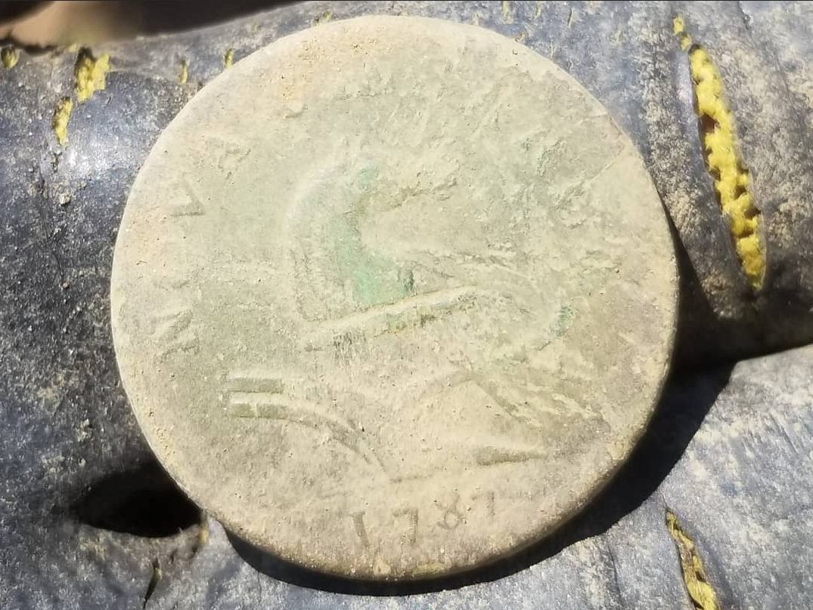
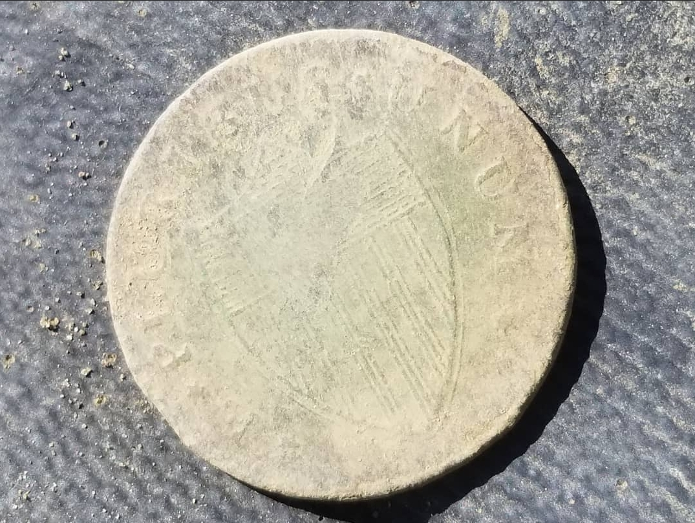
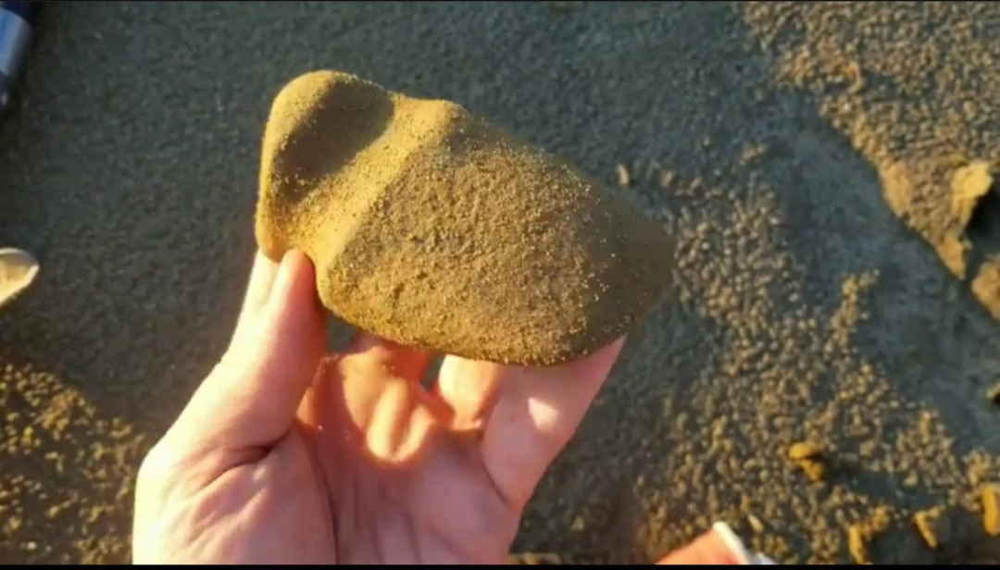
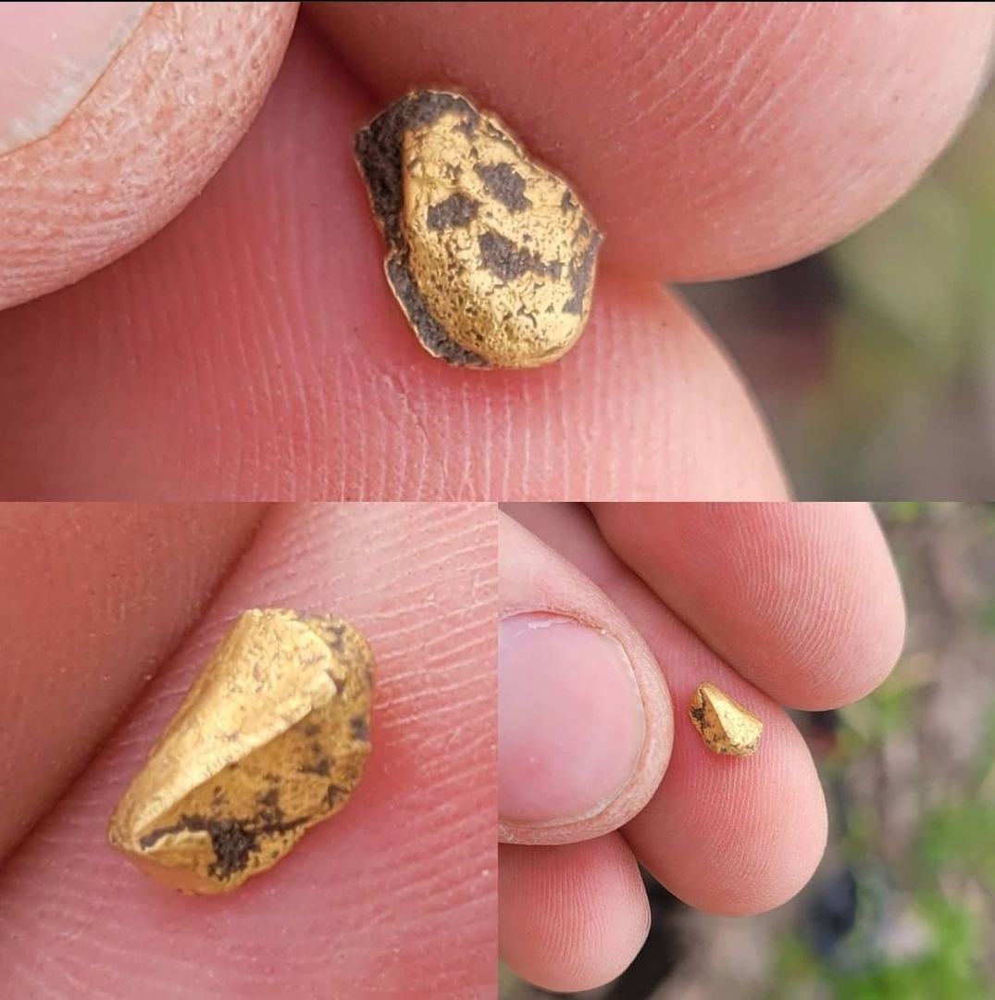
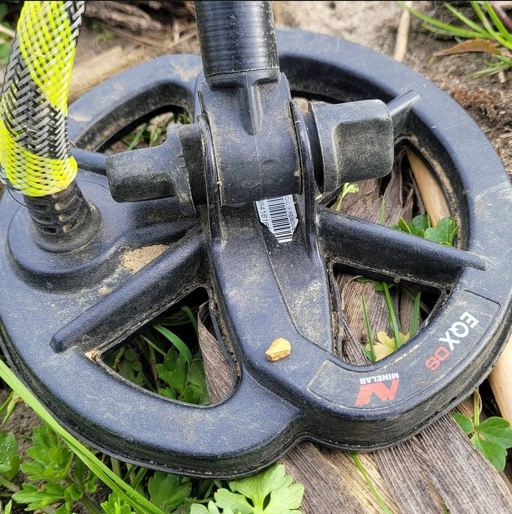

A little bit about the me!

Learn more about FinderBinders with KellyCo here!
#1 1787 NJ Copper Large Cent
#COINALERT! 🚨 #FINDERBINDERS #rescues a 1787 #NJCOPPER #Coin 😎🤘 found with a #Garrett #AtPro #detector with a #NelStorm coil on a #farm in #SouthJersey 😁✌ I was SO shocked to find this #NewJerseyCopper ! The detail on it is beautifu!l ⭐ I am SO #honored This is a 234 year old #Copper and it is also a #BirthdayCoin because I was born in 87! / Before we standardized on our on monetization each of the original #ThirteenColonies had their own coin. I was told there's up to 140+ different variations of it. 🤔 Some people dont even find this coin in their #lifetime of #metaldetecting I am SO #grateful Have you found an NJ copper before? let me know! #DIGUS #RelicHunting #rescuehistory #metaldetectingfinds #preservehistory #dirtfishing #Detectorist #digging #Saturdaynightcoinshow #coinsofinstagram #NJ
#2 Native American Axe Head
#ARTIFACTALERT! 🚨#FINDERBINDERS shares a #NativeAmerican #Artifact: Found with some patience and mostly luck 😁✌ Looks like an #AxeHead right? But the other side is also blunt like #Hammerhead as well 🔍🤔 It definitely does not look this formed naturally. Maybe this was used by the #LenniLenape the other #artifacts found nearby were from the #Archaic era. 8500 - 3000 BC So I guess it would be safe to assume this is as well. I have not ID the stone yet. I am still in awe that I managed to come across something so Incredible ❤ Do you like #NativeAmericanArtifacts ? #DIGUS #RelicHunting #rescuehistory #metaldetectingfinds #artifacthunting #oldhistory #beforeyouandme #gooutside #NJ #history #nature
#3 Golden Nugget in farm field
<>#GOLDALEART! 🚨!#FINDERBINDERS rescues what appears to be a little hunk of #Gold ! 😮 And boy is it heavy for such a small piece! found with a #Minelab #Equinox800 #metaldetector sporting #snakeskinz wire protection 😎🤘 Never in a million years would I have ever thought to find gold in a #farmfield 🙌 Had an hour to kill so I blasted out to a permission property that I have been to many times. Was always told no matter how hard you try a #farm field is never hunted out. 👍Rang in as a 14/15 on the Nox. The small 6" #coil really showed its worth today! I was greeted at the end of the day with a #beautiful #golden #sunset 🙌 The #metaldetecting #gods have smiled upon me today and I'm and forever #grateful #DigUs #Detectorist #SearchEngineer #dirtfishing #minelabmetaldetecting #goldofinstagram #pieceofgold #wow #gooutside #metaldetectingfinds #gometaldetecting #greatday
Wanna see more finds? I have found many treasures in the past!